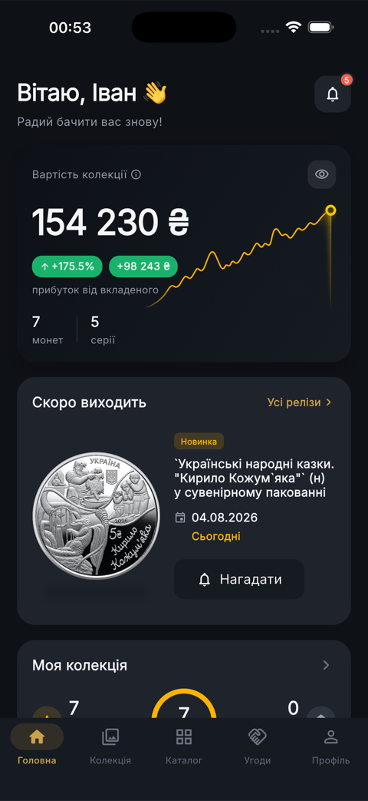
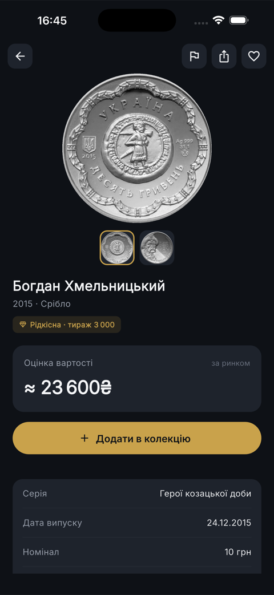
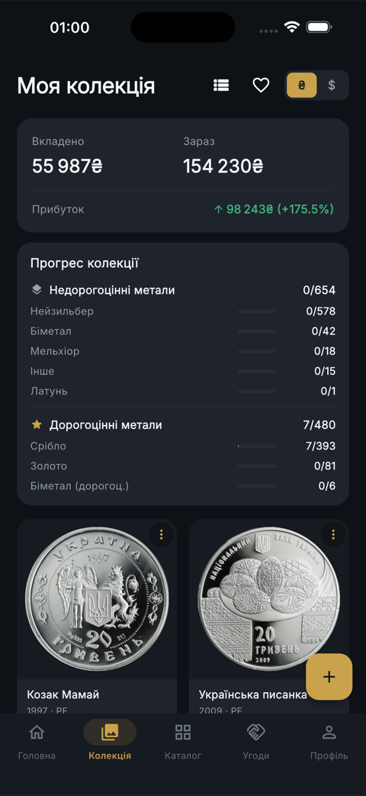
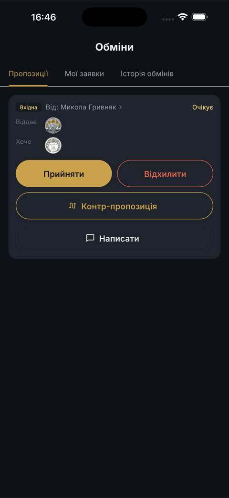
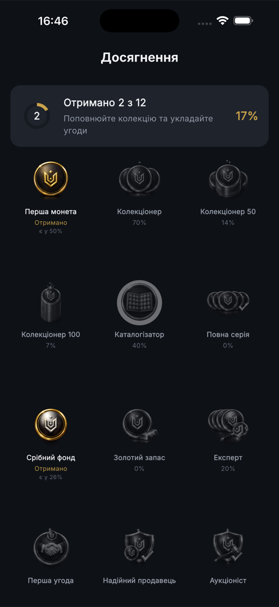

Каталог · Колекція · Маркет
Застосунок №1 для колекціонерів монет України. Каталог усіх монет НБУ, облік власної колекції у ₴ і $, маркетплейс і обмін між колекціонерами, розпізнавання монети по фото та аналітика цін — усе в одному місці.
Каталог · Коллекция · Маркет
Приложение №1 для коллекционеров монет Украины. Каталог всех монет НБУ, учёт коллекции в ₴ и $, маркетплейс и обмен между коллекционерами, распознавание монеты по фото и аналитика цен — всё в одном месте.
Catalog · Collection · Marketplace
The #1 app for coin collectors of Ukraine. A full NBU coin catalog, track your collection in UAH and USD, a marketplace and trading between collectors, photo coin recognition and price analytics — all in one place.
Безкоштовно для iOS та Android Бесплатно для iOS и Android Free for iOS and Android
Як це виглядає Как это выглядит A look inside
Сучасний інтерфейс, темна золота тема, усе продумано для колекціонера. Современный интерфейс, тёмная золотая тема, всё продумано для коллекционера. A modern interface with a dark-gold theme, designed for collectors.





Усі памʼятні, ювілейні та обігові монети НБУ з фото, характеристиками, тиражем і каталожними номерами. Пошук і фільтри.
Наведіть камеру на монету — застосунок сам знайде її в каталозі. Швидко визначити, що у вас в руках.
Облік монет зі станом, ціною й датою. Статистика «вкладено / зараз / прибуток» у ₴ і $, прогрес по серіях.
Купівля, продаж, аукціони та прямий обмін між колекціонерами. Рейтинги продавців, відгуки й чат.
Курси валют і металів НБУ щодня, реальні ринкові ціни монет — а не застарілі каталожні цифри.
Гейміфікація як у банківському застосунку: ачивки, прогрес серій, рівні. Збирати монети стало цікаво.
Все памятные, юбилейные и оборотные монеты НБУ с фото, характеристиками, тиражом и каталожными номерами. Поиск и фильтры.
Наведите камеру на монету — приложение само найдёт её в каталоге. Быстро понять, что у вас в руках.
Учёт монет с состоянием, ценой и датой. Статистика «вложено / сейчас / прибыль» в ₴ и $, прогресс по сериям.
Покупка, продажа, аукционы и прямой обмен между коллекционерами. Рейтинги продавцов, отзывы и чат.
Курсы валют и металлов НБУ ежедневно, реальные рыночные цены монет — а не устаревшие каталожные цифры.
Геймификация как в банковском приложении: ачивки, прогресс серий, уровни. Коллекционировать стало интересно.
All commemorative, jubilee and circulating NBU coins with photos, specs, mintage and catalog numbers. Search and filters.
Point your camera at a coin and the app finds it in the catalog. Instantly identify what you're holding.
Track coins with condition, price and date. “Invested / now / profit” stats in UAH and USD, series progress.
Buy, sell, run auctions and trade directly between collectors. Seller ratings, reviews and chat.
Daily NBU currency and metal rates, real market coin prices — not outdated catalog figures.
Gamification like a banking app: badges, series progress, levels. Collecting becomes fun.
Ми в мережі Мы в сети Find us online